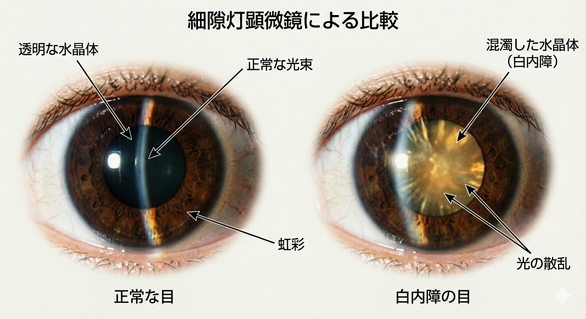

問題 1
白内障の最も一般的な原因は何でしょうか？
解説：白内障の最も多い原因は加齢です。これを「加齢白内障」と呼び、個人差はありますが、年を重ねると誰にでも起こりえます。
 白内障の年代別有病率：80歳代では100%の方に白内障が見られます
白内障の年代別有病率：80歳代では100%の方に白内障が見られます

スリット写真でみる正常な眼球（左）と白内障の眼球（右）
 皮質白内障のスリット写真：水晶体の周辺部から濁りが進行
皮質白内障のスリット写真：水晶体の周辺部から濁りが進行
患者様への説明ポイント：「白内障は、年を重ねると髪が白くなるのと同じような自然な変化ですよ」と伝えると、患者様の不安を和らげることができます。
問題 2
白内障の初期症状として適切「でない」ものはどれでしょうか？
目がかすむ
光がまぶしい
目の痛み
物が二重に見える
解説：白内障は水晶体が濁る病気であり、かすみ、まぶしさ（羞明）、物が二重・三重に見える（複視）などの症状が現れますが、通常、痛みを伴うことはありません。急な目の痛みは緑内障発作などの可能性があるため、注意が必要です。
 白内障のスリット写真：水晶体が濁っている様子がわかる
白内障のスリット写真：水晶体が濁っている様子がわかる
皮質白内障のスリット写真：水晶体の周辺部から濁りが進行
問題 3
白内障に対する点眼薬治療の主な目的は何ですか？
水晶体の濁りを完全に取り除くこと
低下した視力を回復させること
病気の進行を遅らせること
手術後の感染を防ぐこと
解説：初期の白内障に対して処方される点眼薬は、水晶体の濁りの進行を抑制し、手術までの期間を延ばすことが目的です。一度濁った水晶体を薬で元に戻したり、視力を回復させたりする効果はありません。
問題 4
手術を検討する最も一般的なタイミングとして、患者様にどう説明しますか？
視力が0.1以下になったとき
日常生活に不便を感じ始めたとき
医師が強く推奨したとき
診断されたらできるだけ早く
解説：手術の最適なタイミングは、視力の数値だけでなく、患者様自身が「車の運転が怖い」「趣味の裁縫がしづらい」など、日常生活で不便を感じるようになった時です。医師と相談して決めることが重要です。
問題 5
白内障が進行した患者さんの色の見え方で、よくある特徴はどれですか？
全体的に黄色みがかって見える
全体的に青みがかって見える
色がより鮮やかに見える
色が白黒に見える
解説：白内障の原因である水晶体の濁りは、黄色みを帯びてきます。そのため、青い光が遮られ、見るものすべてがセピア調や黄色っぽく見えるようになります。
 白内障患者の眼底写真：水晶体の濁りによって眼底全体が黄色みがかって見える
白内障患者の眼底写真：水晶体の濁りによって眼底全体が黄色みがかって見える
白内障のスリット写真：水晶体が黄色みを帯びて濁っている様子
術後フォローのポイント：術後の患者様が「青色がとても綺麗に見える」と驚かれるのはこのためです。この知識は、患者様の術前・術後の見え方の変化を理解する助けになります。
問題 6
白内障術後、新しいメガネを処方するのに最適なタイミングはいつですか？
手術の翌日
手術の1週間後
視力が安定する1ヶ月〜3ヶ月後
術後であればいつでも良い
解説：術後の視力は、炎症が落ち着き、眼内レンズの位置が安定するまで変動します。通常、1ヶ月から3ヶ月ほどで安定するため、そのタイミングで正確な度数を測定し、メガネを処方するのが最も適切です。
患者様への説明ポイント：「焦って作ると、またすぐに合わなくなってしまいますから、しっかり視力が落ち着いてから作りましょうね」とお伝えすることで、患者様の理解と納得を得やすくなります。
問題 7
白内障手術後、患者様に最も注意してもらうべきことは何ですか？
感染症の予防（清潔保持と点眼の徹底）
視力トレーニングを毎日行うこと
目を温めて血行を良くすること
できるだけ目を使わないようにすること
解説：手術後の最も重篤な合併症は、細菌などが目の中に入る「術後感染症」です。これを防ぐため、医師の指示通りに点眼を続け、目をこすらない、洗顔・洗髪の制限を守るなど、清潔を保つことが非常に重要です。
問題 8
術後1週間の患者様への生活指導として、特に強調すべきことはどれですか？
目をこすらない・圧迫しないこと
積極的に目を動かす運動をすること
疲れるまで読書や手芸をすること
術前と同じように顔を洗うこと
解説：術後間もない時期は、手術の創（きず）がまだ完全にふさがっていません。目をこすったり、圧迫したりすると、創が開いて感染症の原因になったり、眼内レンズがずれたりする危険があります。
術後フォローのポイント：定期検査で来院された患者様には、「順調ですね。引き続き、目をこすらないようにだけ気をつけてくださいね」と一声かけることが、注意喚起と安心感につながります。
問題 9
加齢以外で白内障の原因となりうるものは次のうちどれですか？
アトピー性皮膚炎
ステロイド薬の長期使用
目の怪我
これらすべて
解説：加齢以外にも、アトピー性皮膚炎、糖尿病、目の外傷、ぶどう膜炎、ステロイド薬の長期使用などが原因で、若い方でも白内障を発症することがあります。
問診時のポイント：若い患者様が白内障を疑う症状を訴えた場合、これらの既往歴や使用薬剤について確認することが診断の助けになります。
問題 10
「手術後、またかすんできましたが再発ですか？」と聞かれた際の適切な説明はどれですか？
「はい、再発したので再手術が必要です」
「後発白内障という状態で、簡単なレーザー治療ですぐに改善します」
「眼内レンズが汚れているので洗浄が必要です」
「気のせいです。しばらく様子を見てください」
解説：白内障そのものは再発しませんが、手術から数ヶ月～数年後に眼内レンズを支えている袋（水晶体嚢）が濁る「後発白内障」が起こることがあります。これは再手術ではなく、外来で5分程度の簡単なレーザー治療を行うことで、すぐに視力を回復できます。